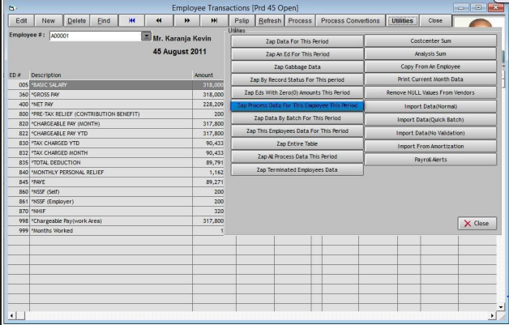

How to Delete Employee Data
Follow these steps to delete employee data:
-
To delete inputted data, select the transaction added and click on Delete.To delete processed data, select utilities from the menu bar on the transactions window and select on the Zap this employee processed data
-
Confirm the process before you can proceed. BE CAREFUL!
 -
N.B. For a quick view of the employee payslip, just click on Pslip button on the menu bar.
• To delete all employee transactions for the current period use Zap this employee data for this period.